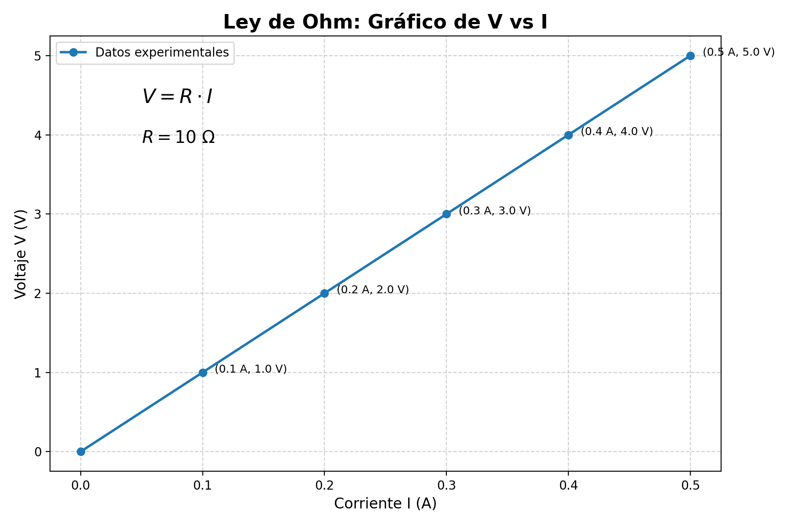
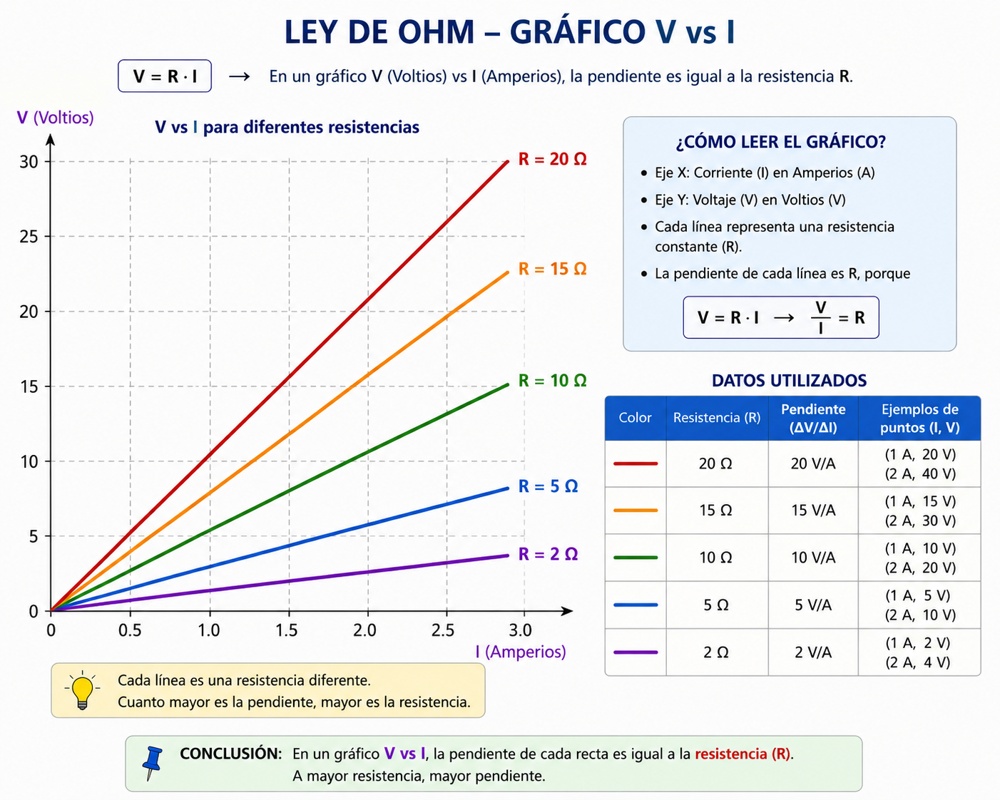

Sistemas Multi Física - Profesor Javier Pereyra
Ley de Ohm y circuitos simples
Apunte de estudio para comprender qué es el voltaje y cómo se relacionan tensión, corriente y resistencia en un circuito eléctrico básico.

1 Idea inicial
En las clases anteriores estudiamos dos ideas importantes: la corriente eléctrica, que indica cuánta carga circula por unidad de tiempo, y la resistencia eléctrica, que indica cuánta oposición ofrece un conductor al movimiento de esas cargas.
Pero falta una pregunta clave: ¿qué "empuja" a las cargas para que se muevan por el circuito? Esa idea se describe con el voltaje, también llamado tensión eléctrica o diferencia de potencial.
2 ¿Qué es el voltaje?
Una pila, una batería o una fuente de alimentación mantiene una diferencia eléctrica entre dos puntos: un borne positivo y un borne negativo. Esa diferencia permite que, al cerrar el circuito, las cargas se muevan de manera ordenada.
Una analogía útil es pensar en agua a distintas alturas. Si hay una diferencia de altura, el agua puede fluir. En electricidad, la diferencia no es de altura, sino de potencial eléctrico. La analogía ayuda, aunque tiene un límite: en un circuito no circula agua, circulan cargas.
\(V\): voltaje o tensión eléctrica.
\(E\): energía transferida.
\(q\): carga eléctrica.
La unidad es el volt: \(1\,V=1\,J/C\).
3 Circuito simple
Un circuito simple necesita una fuente de voltaje, conductores y un receptor o resistencia, como una lamparita. Si el circuito está cerrado, puede circular corriente. Si está abierto, no hay camino completo para las cargas.

En este apunte trabajaremos con circuitos simples de una sola resistencia equivalente. Más adelante se puede ampliar a circuitos en serie y en paralelo.
4 Relación con corriente y resistencia
Ahora podemos unir las tres ideas centrales de esta secuencia. La corriente depende del voltaje aplicado y de la resistencia del circuito.
Si aumenta el voltaje y la resistencia se mantiene igual, suele circular más corriente. Si aumenta la resistencia y el voltaje se mantiene igual, circula menos corriente.
5 Ley de Ohm
Para muchos conductores metálicos a temperatura aproximadamente constante, la tensión aplicada y la corriente son directamente proporcionales. Esa relación se conoce como Ley de Ohm.
\(V\): tensión o voltaje, medido en volt \(V\).
\(I\): corriente eléctrica, medida en ampere \(A\).
\(R\): resistencia eléctrica, medida en ohmio \(\Omega\).
La relación de unidades es: \(1\,V=1\,A\cdot\Omega\).
6 Despejes útiles
Según el dato que falte, se puede reorganizar la fórmula:
7 Sistema de unidades
| Magnitud | Símbolo | Unidad SI | Interpretación |
|---|---|---|---|
| Voltaje o tensión | \(V\) | volt \(V\) | Energía por unidad de carga: \(1\,V=1\,J/C\). |
| Corriente eléctrica | \(I\) | ampere \(A\) | Carga por unidad de tiempo: \(1\,A=1\,C/s\). |
| Resistencia eléctrica | \(R\) | ohmio \(\Omega\) | Oposición al movimiento de las cargas. |
8 Gráfico \(V(I)\)
Si un conductor cumple la Ley de Ohm, el gráfico de voltaje en función de la corriente es una recta que pasa por el origen. La pendiente de esa recta representa la resistencia.

Lectura del gráfico: cada punto relaciona un valor de corriente con un valor de voltaje. Si al duplicar \(I\) también se duplica \(V\), la relación es proporcional.

9 Ejemplo resuelto 1: averiguar corriente
Problema: una lamparita tiene una resistencia de \(6\,\Omega\) y se conecta a una pila de \(12\,V\). ¿Qué corriente circula?
Datos: \(R=6\,\Omega\); \(V=12\,V\); \(I=?\)
Fórmula: \(\displaystyle I=\frac{V}{R}\)
Reemplazo: \(\displaystyle I=\frac{12\,V}{6\,\Omega}=2\,A\)
Resultado: \(I=2\,A\)
Interpretación: por la lamparita circulan \(2\,C\) de carga por segundo.
10 Ejemplo resuelto 2: averiguar voltaje
Problema: por una resistencia de \(8\,\Omega\) circula una corriente de \(0{,}5\,A\). ¿Qué voltaje se aplicó?
Datos: \(R=8\,\Omega\); \(I=0{,}5\,A\); \(V=?\)
Fórmula: \(\displaystyle V=I\cdot R\)
Reemplazo: \(\displaystyle V=0{,}5\,A\cdot8\,\Omega=4\,V\)
Resultado: \(V=4\,V\)
Interpretación: la fuente entregó \(4\,J\) por cada coulomb de carga.
11 Ejemplo resuelto 3: averiguar resistencia
Problema: un dispositivo se conecta a \(9\,V\) y circula una corriente de \(0{,}3\,A\). ¿Cuál es su resistencia?
Datos: \(V=9\,V\); \(I=0{,}3\,A\); \(R=?\)
Fórmula: \(\displaystyle R=\frac{V}{I}\)
Reemplazo: \(\displaystyle R=\frac{9\,V}{0{,}3\,A}=30\,\Omega\)
Resultado: \(R=30\,\Omega\)
Interpretación: el dispositivo ofrece una oposición de \(30\,\Omega\) al paso de la corriente.
12 Actividades
- Explica con tus palabras qué significa que una pila tenga \(1{,}5\,V\). Usá la idea de energía por unidad de carga.
- Una resistencia de \(4\,\Omega\) se conecta a \(12\,V\). Calcula la corriente que circula.
- Por una resistencia de \(10\,\Omega\) circula \(0{,}2\,A\). Calcula el voltaje aplicado.
- Un dispositivo recibe \(6\,V\) y por él circulan \(0{,}5\,A\). Calcula su resistencia.
- Si se mantiene la misma resistencia y se duplica el voltaje, ¿qué ocurre con la corriente? Justifica usando \(I=\frac{V}{R}\).
- Si se mantiene el mismo voltaje y se duplica la resistencia, ¿qué ocurre con la corriente? Justifica con una comparación numérica sencilla.
- Completa la tabla aplicando la Ley de Ohm.
\(V\) \(I\) \(R\) Dato que se busca \(12\,V\) _____ \(3\,\Omega\) \(I\) _____ \(2\,A\) \(5\,\Omega\) \(V\) \(9\,V\) \(0{,}3\,A\) _____ \(R\) - En un gráfico \(V(I)\), una recta pasa por el punto \(I=2\,A\), \(V=10\,V\). Calcula la resistencia a partir de la pendiente \(R=\frac{V}{I}\).
- Un estudiante dice: "si la resistencia es mayor, siempre hay más corriente". ¿Está bien? Corrige la afirmación y explica qué variable debería mantenerse constante para comparar.
- Actividad integradora: un cable tiene cierta resistencia y se conecta a una fuente. Explica en un párrafo cómo se relacionan voltaje, corriente y resistencia usando las tres clases: \(I=\frac{q}{t}\), \(R=\rho\frac{L}{A}\) y \(V=I\cdot R\).
13 Preguntas para pensar
- ¿Por qué no es correcto confundir voltaje con corriente?
- ¿Qué rol cumple la batería en un circuito simple?
- ¿Por qué una resistencia muy alta puede hacer que la corriente sea pequeña aunque exista voltaje?
- ¿Qué representa la pendiente en un gráfico \(V(I)\)?
- ¿Qué condiciones deberían mantenerse constantes para comprobar experimentalmente la Ley de Ohm?